Cognia plugin artwork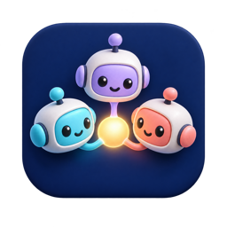
Agent Team Examples
agent-team-examples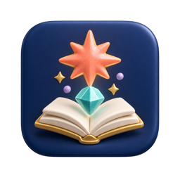
Starter Skills
anthropic-skills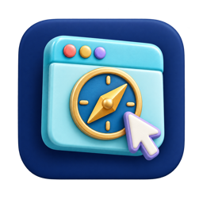
Browser Tools
browser-tools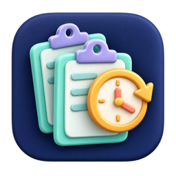
Clipboard History
clipboard-history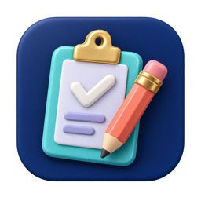
Clipboard Tools
clipboard-tools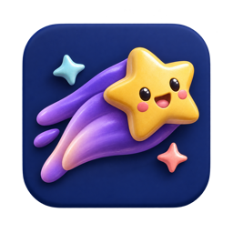
Tactical Mind Dial
cognia-anime-effort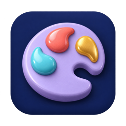
Appearance Demo
cognia-appearance-demo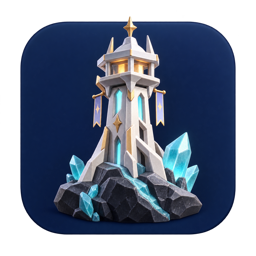
Arknights: Rhodes Operations (Unofficial)
cognia-arknights-theme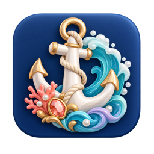
Azur Lane: Azure Anchorage (Unofficial)
cognia-azur-lane-theme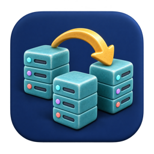
Go Backend Refactor Suite
cognia-backend-refactor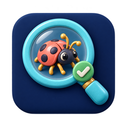
Bugfix Review
cognia-bugfix-review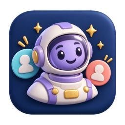
Cognia Built-in Characters
cognia-builtin-characters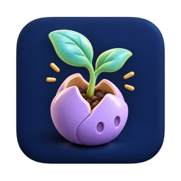
Character Seeds
cognia-character-seedsCognia Documents
cognia-documents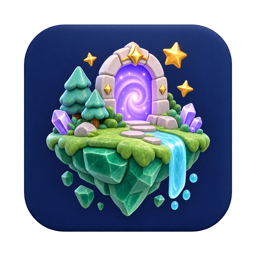
Game Worlds: Anime Collection (Unofficial)
cognia-game-worlds-theme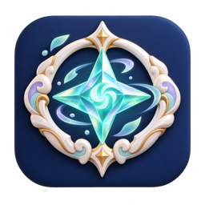
Genshin Impact: Seven Nations (Unofficial)
cognia-genshin-theme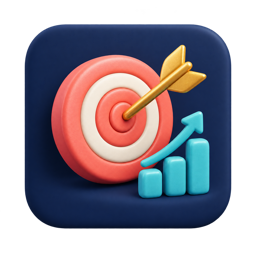
Goal Insights (example)
cognia-goal-insights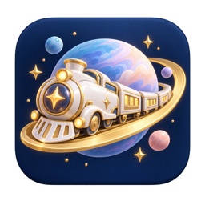
Honkai: Star Rail — Astral Journey (Unofficial)
cognia-honkai-star-rail-theme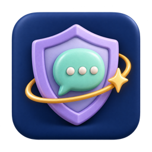
Laya (local System-1)
cognia-laya-guard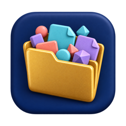
Material Icon Theme
cognia-material-icon-theme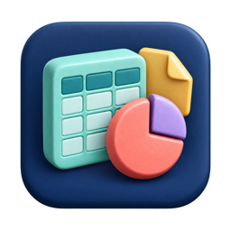
Cognia Office
cognia-office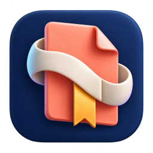
Cognia PDF
cognia-pdf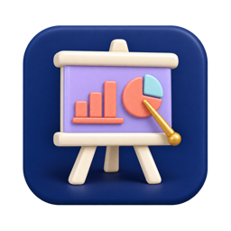
Cognia Presentations
cognia-presentations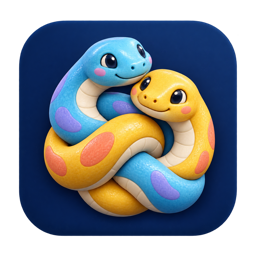
Python Demo
cognia-python-demo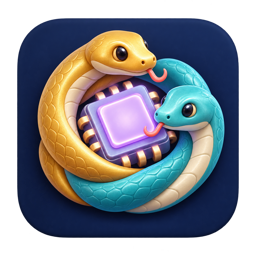
Python Runtime Contributions Demo
cognia-python-runtime-demo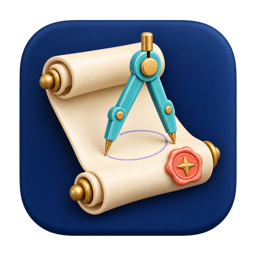
RFC Toolkit
cognia-rfc-toolkit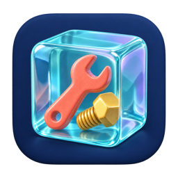
Sandboxed Tools
cognia-sandboxed-tools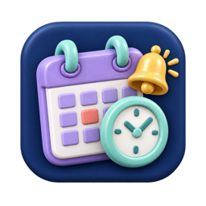
Scheduler Tools
cognia-scheduler-tools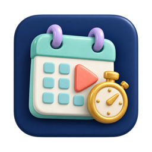
Scheduling Demo (example)
cognia-scheduling-demo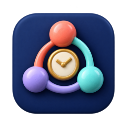
Share Watch (example)
cognia-share-watch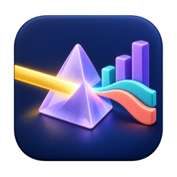
Cognia Visualize
cognia-visualize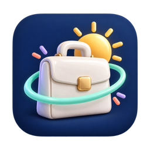
Work Mode
cognia-work-mode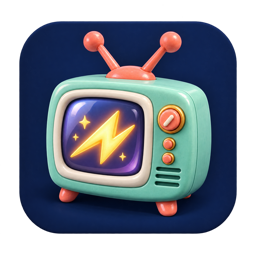
Zenless Zone Zero: New Eridu Signal (Unofficial)
cognia-zenless-zone-zero-theme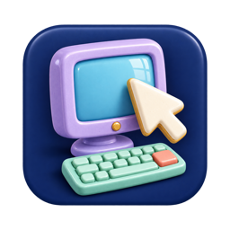
Computer Use
computer-use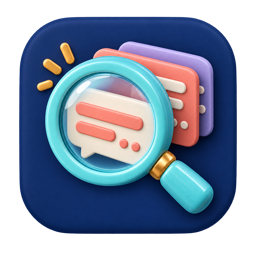
Context Inspector (Developer)
context-inspector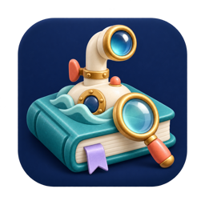
Deep Research
deep-research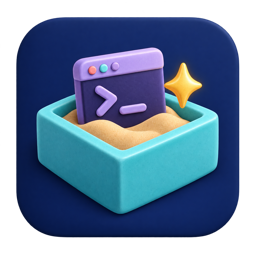
E2B Sandbox
e2b-sandbox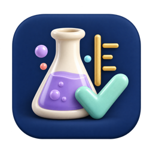
Agent Eval
eval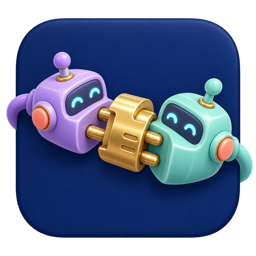
External Agent Adapter Example
external-agent-adapter-example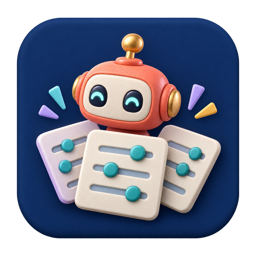
External Agent Preset Example
external-agent-preset-example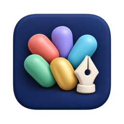
Figma External Service
figma-external-service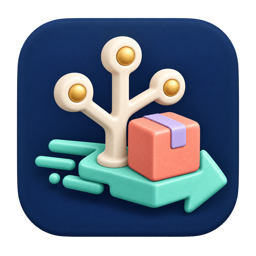
GitHub Delivery
github-delivery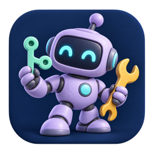
GitHub Devin Bot
github-devin-bot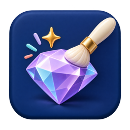
Impeccable
impeccable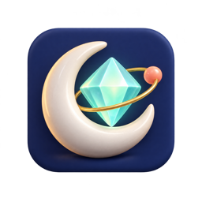
Kimi Code Subscription Example
kimi-subscription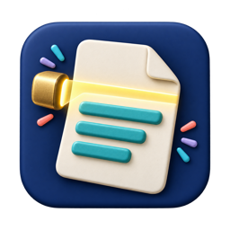
OCR
ocr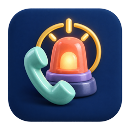
PagerDuty
pagerduty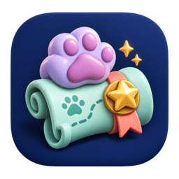
Pet Daily Quests
pet-daily-quests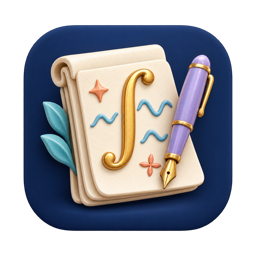
Pi LaTeX Workbench
pi-latex-workbench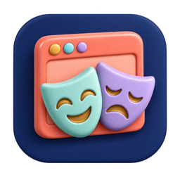
Playwright Browser
playwright-mcp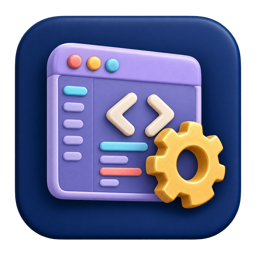
Pro IDE Contribution (fixture)
pro-ide-fixturePrompt Templates
prompt-templatesRepoWiki
repowikiRipgrep Tools
ripgrep-toolsScreenshot
screenshotSkill Recorder
skill-recorderSRE Agent
sre-agentStagehand Browser
stagehand-mcpStrix Security Scan
strix-securityTest LSP Contribution (fixture)
test-lsp-contributionUI Surface Reference
ui-surface-referenceWASM Example: Rust Formatter
wasm-example-formatterWeb Clone
web-cloneWeb Tools
web-toolsWorkflow AI
workflow-aiWorkspace Tools
workspace-toolsZhihu Content Pipeline
zhihu-content-pipeline